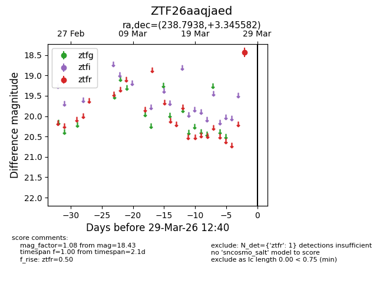
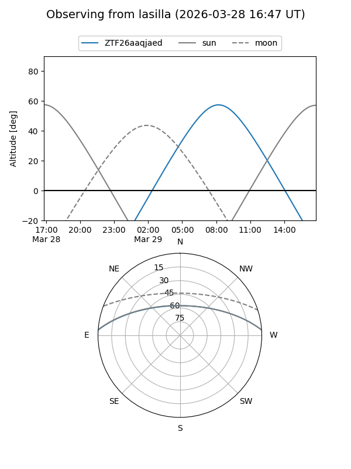
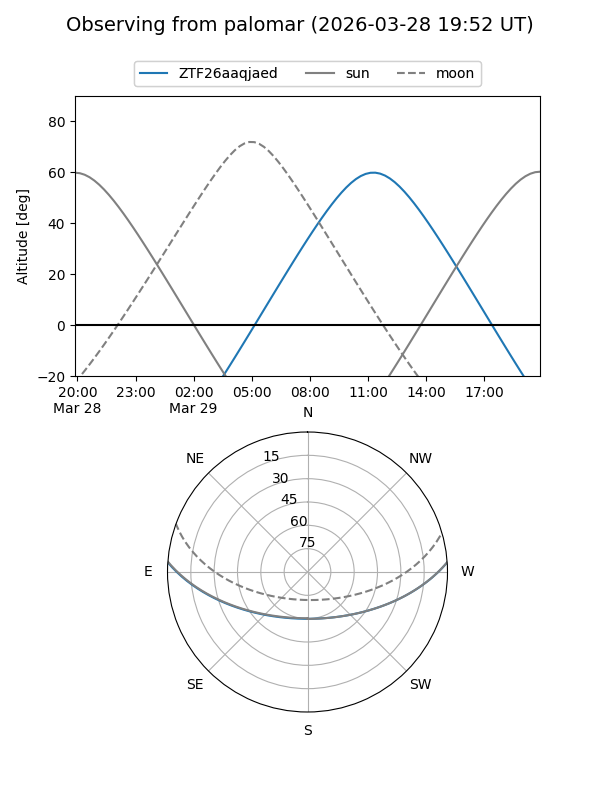

ZTF26aaqjaed
Target ZTF26aaqjaed at 2026-03-29 12:43
Aliases and brokers:
FINK: link
Lasair: link
ALeRCE: link
alt names
ZTF26aaqjaed (ztf,fink_ztf)
Coordinates:
equatorial (ra, dec) = 238.7938,+3.34558
equatorial (HMS+DMS) = 15:55:10.51,+03:20:44.09
galactic (l, b) = (12.6807,+40.13019)
Flags:
Photometry:
last ztfr=18.43
1 ztfr detections
Lightcurve

Visibility


Additional plots